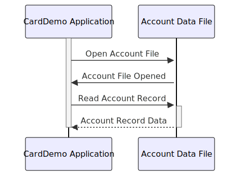

Gerado em: 1º de outubro de 2024
Título do Documento: Especificação da Estrutura de Dados da Conta CardDemo
Descrição Resumida:
Este documento descreve a estrutura de dados dos registros de contas de clientes no aplicativo CardDemo. Ele descreve as informações armazenadas para cada conta, incluindo identificação, status, saldo, limites de crédito e outros detalhes relevantes.
Histórias do Usuário:
Como administrador do sistema de cartão de crédito, preciso de uma maneira padronizada de armazenar e acessar as informações da conta do cliente para garantir o processamento preciso de transações, gerenciamento de contas e relatórios.
Épico Relacionado:
2 - Gestão de Contas
Requisitos Funcionais:
A estrutura de dados do Registro da Conta deve incluir os seguintes campos:
ACCT-ID: Um identificador exclusivo para cada conta.ACCT-ACTIVE-STATUS: Um indicador do status atual da conta (por exemplo, Ativo, Inativo, Fechado).ACCT-CURR-BAL: O saldo atual da conta.ACCT-CREDIT-LIMIT: A linha de crédito máxima estendida ao titular da conta.ACCT-CASH-CREDIT-LIMIT: O valor máximo de saque em dinheiro permitido na conta.ACCT-OPEN-DATE: A data em que a conta foi aberta.ACCT-EXPIRAION-DATE: A data em que a conta expirará.ACCT-REISSUE-DATE: A data da última renovação ou reemissão da conta.ACCT-CURR-CYC-CREDIT: O total de transações de crédito processadas no ciclo de cobrança atual.ACCT-CURR-CYC-DEBIT: O total de transações de débito processadas no ciclo de cobrança atual.ACCT-ADDR-ZIP: O CEP associado ao endereço do titular da conta.ACCT-GROUP-ID: Um código que identifica a afiliação de grupo da conta (se aplicável).
Requisitos Não Funcionais:
- Integridade de dados: O sistema deve garantir a precisão e consistência dos dados da conta por meio de regras de validação e verificações de integridade de dados.
- Segurança: O acesso às informações da conta deve ser restrito a pessoal autorizado, seguindo os protocolos de segurança estabelecidos pela organização.
- Desempenho: As operações de recuperação e atualização em registros de contas devem ser realizadas de forma eficiente para garantir o desempenho ideal do sistema.
Critérios de Aceitação:
- A estrutura de dados do Registro da Conta deve ser implementada conforme definido nesta especificação.
- Todos os campos obrigatórios devem ser preenchidos com dados válidos.
- O sistema deve aplicar regras de validação de dados para cada campo para manter a integridade dos dados.
- O acesso às informações da conta deve ser restrito a usuários autorizados.
- O teste de desempenho deve ser conduzido para garantir a recuperação e atualização de dados eficientes.
Melhorias de Código:
- Implemente rotinas de validação de dados para garantir a precisão dos dados inseridos no registro da conta.
- Adicione mecanismos de tratamento de erros para lidar normalmente com quaisquer exceções ou erros durante o processamento de dados.
- Documente a estrutura de dados e seus campos claramente para melhorar a legibilidade e manutenção do código.
Melhorias de Segurança:
- Criptografe informações confidenciais da conta, como números de conta e detalhes do cartão de crédito, para proteger contra acesso não autorizado.
- Implemente mecanismos de controle de acesso para restringir o acesso a dados com base em funções e permissões do usuário.
- Audite o sistema regularmente para rastrear o acesso a dados e identificar quaisquer violações de segurança em potencial.
Diagrama Conceitual:

–Made by “Smart Engineering” (by Compass.UOL)–